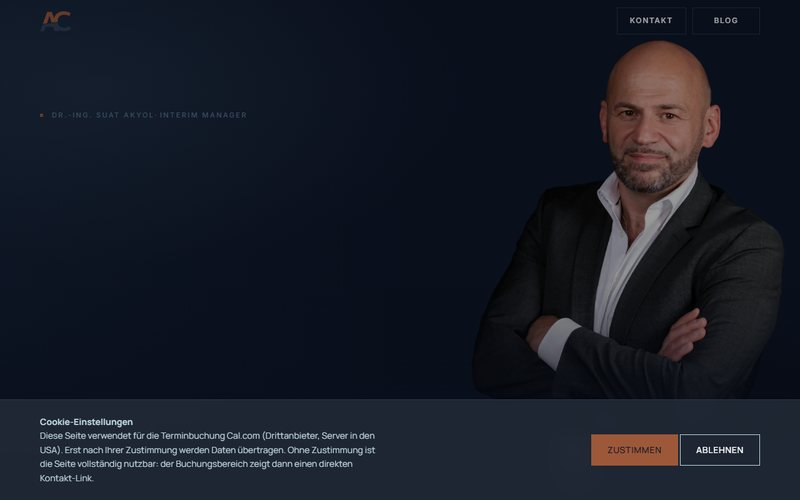
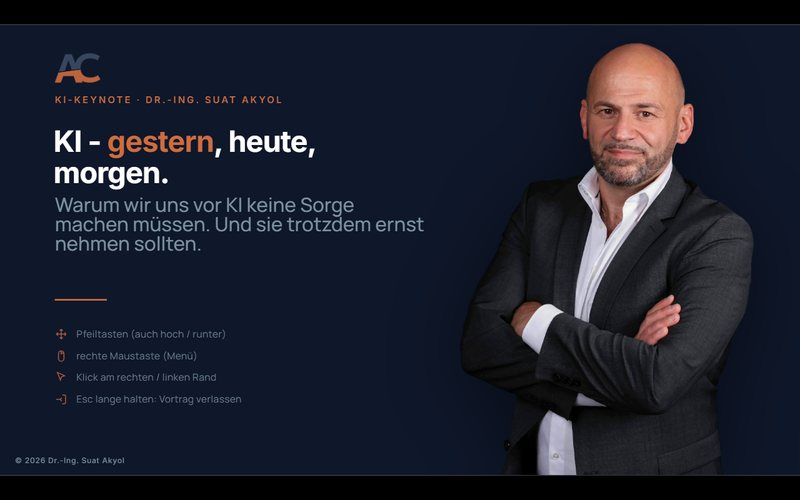
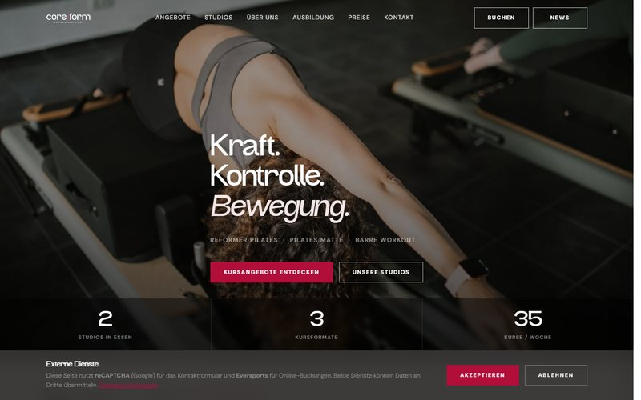
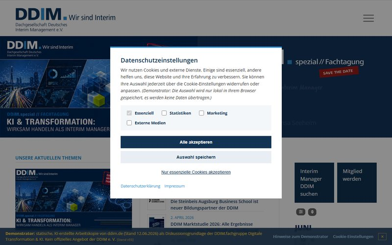
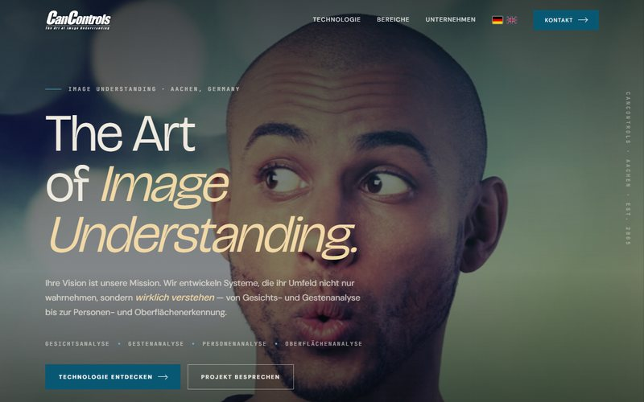

Start / Über diesen Entwurf
Über diesen Entwurf.
Was Sie hier sehen, wie es entstanden ist und was funktioniert.
Bitte beachten
Diese Seite ist ein unverbindlicher Entwurf und nicht öffentlich auffindbar (für Suchmaschinen gesperrt). Sie wurde ausschließlich aus öffentlich verfügbaren Materialien des bestehenden Webauftritts zusammengestellt, steht in keiner Verbindung zum offiziellen Auftritt der Kanzlei und konkurriert nicht mit dem Original. Auf Wunsch wird sie jederzeit vollständig entfernt.
Stand der Umsetzung
Startklar, bis auf die letzte Meile.
Design, Inhalte, Struktur und die komplette Suchmaschinen-Optimierung sind fertig. Was noch fehlt, sind technische Anbindungen für den Live-Betrieb.
Fertig und funktionsfähig
- Vollständiges, individuelles Design, kein Baukasten-Template
- Alle Seiten: Start, Kanzlei, fünf Fachgebiete, Service, Kontakt, Karriere, Steuerberaterwechsel
- Optimiert für Smartphone, Tablet und Desktop
- Foto-Hero mit Animation und modernes Mobilmenü
- Vollständige Suchmaschinen-Daten (SEO) und KI-Suche (GEO)
- Häufige Fragen mit Rich-Results-Auszeichnung
- Rechtssichere Karten-Einbindung, lädt erst nach Zustimmung
- Social-Vorschaubilder, Favicon und schnelle Ladezeiten
Für den Live-Betrieb offen
- DATEV-News-Modul echt anbinden (aktuell Platzhalter)
- Kontaktformular an den Mailversand anbinden
- Seite live schalten und für Suchmaschinen freigeben
- Datenschutzerklärung rechtlich finalisieren
- Optional: Redaktionssystem zum Selbst-Pflegen
Auffindbarkeit: SEO und GEO
Fakten, die Google und KI jetzt verstehen.
Über 40 strukturierte Angaben (Adresse, Öffnungszeiten, Leistungen, Team, Themen) machen die Kanzlei für Suchmaschinen und KI-Assistenten auswertbar. Die bisherige Seite liefert davon keinen einzigen: ihr einziges Datenobjekt ist ein leeres „Article“.
Warum GEO besonders zählt
Gefunden werden, wo künftig gesucht wird.
Immer mehr Menschen fragen ChatGPT, Perplexity oder die KI-Übersicht von Google: „Guter Steuerberater in Mönchengladbach?“ Diese Systeme empfehlen nur, was sie strukturiert verstehen. Dieser Entwurf gibt ihnen eine eigene Info-Datei, eine Frage-Antwort-Auszeichnung und klare Themen-Signale. Für die bisherige Seite sind diese Assistenten praktisch blind.
Referenzen
Kein Einzelfall: sechs Projekte aus meiner Hand.
Von der eigenen Website über Kundenprojekte bis zu Relaunch-Demonstratoren, alle mit KI-Unterstützung gebaut.

akyol.deMeine eigene Website: Interim Management und Blog.Live ansehen
KI: gestern, heute, morgenInteraktive Online-Keynote, die während des Vortrags live mitarbeitet.Live ansehen
core formPilates-Studio: Kursbuchung, Studios und Ausbildung, CI-konform.Live ansehen
DDIM-RelaunchRelaunch-Demonstrator für den Interim-Management-Verband DDIM.Live ansehen
CanControlsBildverstehen und Sensorik, Aachen.Live ansehen SeitecEnergie- und Sicherheitstechnik aus einer Hand.Live ansehenZum Hintergrund
Was ist das hier?
Ein unverbindlicher Redesign-Entwurf für die Steuerberatung Muyres, erstellt von Dr.-Ing. Suat Akyol. Inhalte und Bilder stammen aus dem bestehenden Auftritt; gezeigt wird, wie er in moderner, klarer und besser auffindbarer Form aussehen kann. Anmerkungen gerne an contact@akyol.de.